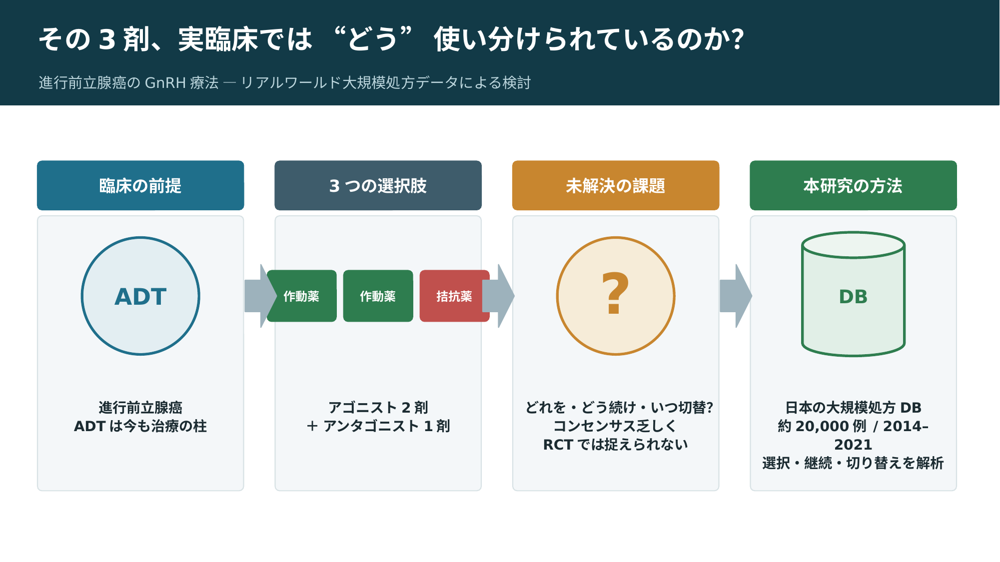
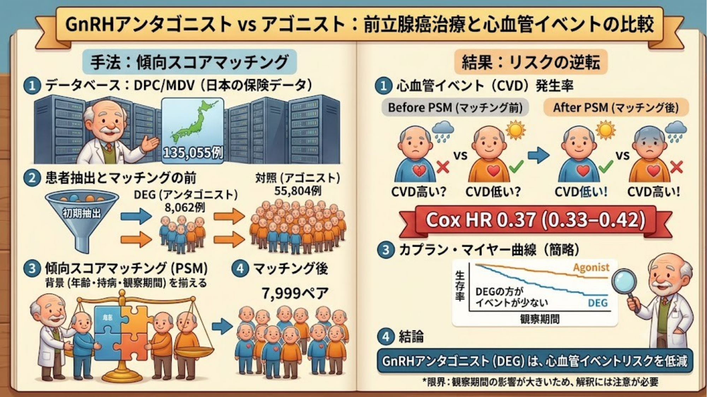

① 実臨床での使い分け（処方パターン）

前立腺がんのホルモン療法（ADT）は、新しい薬が次々に出た今も治療の土台で、その中心がGnRH製剤です。日本ではアゴニスト2剤（リュープロレリン・ゴセレリン）とアンタゴニスト1剤（デガレリクス）が使われますが、「どれを選び、どれくらい続け、いつ切り替えるか」に決まった正解はありません。しかもこの”使い分け”や”切り替え”は、ひとつの薬を続ける臨床試験（RCT）では見えてこない、実臨床ならではの動きです。そこで本研究では、約2万人分の日本の大規模処方データを使い、3剤が現場で実際にどう選ばれ・続けられ・切り替えられているのかを可視化しました。教科書やガイドラインには載っていない”リアルな処方の姿”を一緒に見てみませんか。
② 心血管イベントの比較

前立腺癌のホルモン療法では、GnRHアゴニスト（リュープリンなど）が長く使われてきました。ただ、この薬は心筋梗塞などの心血管イベントを増やすかもしれない、と以前から指摘されています。一方、あとから出てきたGnRHアンタゴニスト（ゴナックス＝デガレリクス）は、心血管系にやさしいのでは？と期待されていますが、日本人の大規模なデータでの検討はほとんどありませんでした。そこで今回、MDVという保険医療（レセプト・DPC）データベースを使い、実際の日本の診療で前立腺癌に対しこれらの薬を使った患者さんを大勢集めました。年齢や糖尿病・高血圧などの背景がそろうように傾向スコアマッチングで調整したうえで、アゴニストとアンタゴニストで心血管イベントの起こりやすさを比べてみた、という研究です。